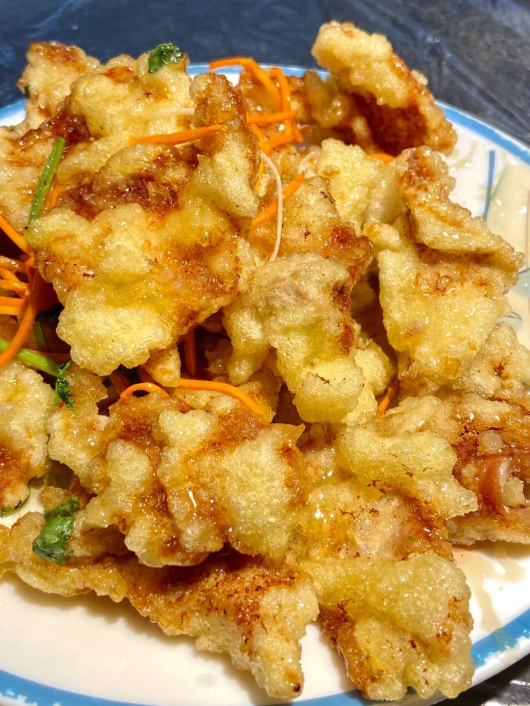

东北 · DongBei Cuisine
豪爽背后的烟火与实在
一、起源与历史
东北菜发源于白山黑水间的满族、朝鲜族等民族饮食，融合了闯关东移民的烹饪技艺，清末民初逐渐形成“量大味浓、就地取材”的风格，烹饪思想强调“鲜咸为主，兼顾酸甜”
二、地理与气候影响
东北冬季寒冷漫长，促使饮食以“高热量、重调味”为主（如炖菜保暖）；黑土地与山林、江河资源丰富，提供了酸菜、山珍、河鲜等特色食材
三、主要烹调技法
- 炒
- 爆
- 炖
- 扒
- 熘
每种技法对应独特味型，如炖菜的醇厚味、熘菜的酸甜味、酱菜的咸香味
四、代表菜肴
-
锅包肉

-
小鸡炖蘑菇
-
地三鲜
五、风味与审美
东北菜的特点是“量大实惠、鲜咸浓郁”，追求“粗中带细”的平衡（如锅包肉外酥里嫩），体现东北人“豪爽而务实”的生活态度
六、文化意象
东北菜是东北“烟火气与人情味”的象征，从家庭聚餐的杀猪菜到街边的烤冷面，体现了“大口吃肉、大碗喝酒”的生活氛围
七、地方俗语
东北菜，盘盘都像小锅盖
小鸡炖蘑菇，越吃越有福
拓展视野：视频
拓展视野：学术资料
| 研究论文 / 报告名称 | 链接 |
|---|---|
| 查看论文 |